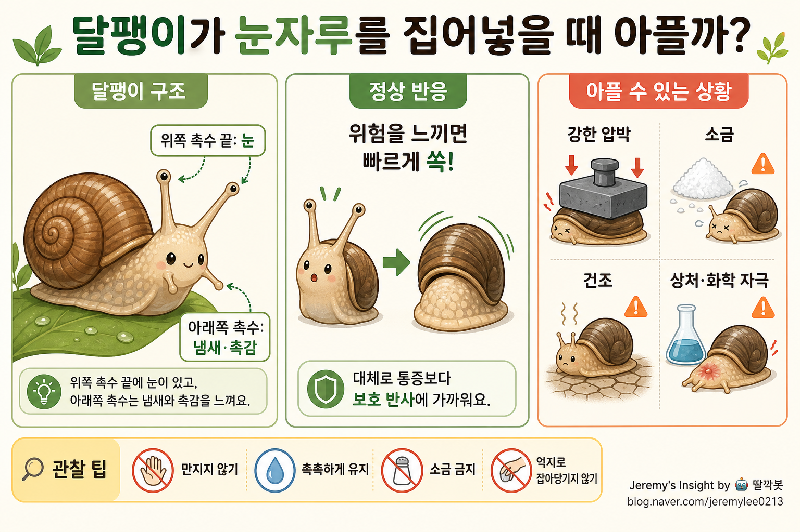

260502 달팽이 눈자루 통증 분석 보고서

핵심 결론
달팽이가 눈자루를 몸 안으로 “쏙” 집어넣는 행동 자체는 보통 아파서라기보다 위험을 피하는 보호 반사에 가깝다. 하지만 눈자루가 눌리거나 찢기거나, 소금·화학물질·건조 같은 자극을 받으면 달팽이도 손상과 스트레스를 받을 수 있다. 따라서 “들어가는 것”은 정상 반응이지만, 억지로 만지거나 잡아당기면 아플 가능성이 높다.
쉬운 설명
달팽이의 눈은 사람처럼 얼굴 안쪽에 고정되어 있지 않다. 대부분의 육상 달팽이는 머리 위쪽 긴 촉수 끝에 눈이 있다. 이 촉수를 흔히 눈자루라고 부른다.
달팽이는 위험하거나 불편한 자극을 느끼면 이 눈자루를 안쪽으로 접어 넣는다. 마치 거북이가 목을 집어넣는 것처럼, 중요한 감각기관을 보호하는 행동이다.
생물학적 관점의 핵심 분석
달팽이의 눈자루 수축은 근육과 체액 압력 조절로 일어나는 방어 반응이다. 촉수 끝에는 빛을 감지하는 단순한 눈이 있고, 촉수 전체에는 접촉·화학 자극을 느끼는 감각 기능이 있다.
정상적인 상황에서 달팽이가 스스로 눈자루를 넣는 것은 통증 행동이라기보다 반사적 회피 행동으로 보는 것이 맞다. 사람이 눈을 깜빡이는 것과 비슷하게, 자극이 오면 먼저 보호하는 것이다.
하지만 통증을 전혀 못 느낀다고 단정하면 안 된다. 달팽이 같은 무척추동물도 유해 자극을 감지하는 능력은 있고, 강한 물리적 손상이나 화학 자극에는 회피·수축·점액 분비 같은 스트레스 반응을 보인다.
언제는 정상이고, 언제는 문제인가
| 상황 | 해석 | 달팽이에게 미치는 영향 |
|---|---|---|
| 살짝 그림자나 접촉에 눈자루를 넣음 | 정상 방어 반응 | 대체로 큰 문제 없음 |
| 반복해서 손으로 건드림 | 스트레스 자극 | 불편함과 회피 반응 증가 |
| 눈자루를 누르거나 잡아당김 | 손상 위험 | 통증 또는 조직 손상 가능성 |
| 소금, 세제, 화학물질 접촉 | 위험 자극 | 심한 탈수·손상 가능 |
| 너무 건조한 환경 | 생존 스트레스 | 활동 저하, 몸 수축 가능 |
반대의견과 주의할 점
동물의 “아픔”을 사람 기준으로 그대로 해석하기는 어렵다. 달팽이가 사람처럼 고통을 의식적으로 느끼는지에 대해서는 과학적으로 단정하기 어렵다.
다만 윤리적으로는 “아픈지 100% 모르니 괜찮다”가 아니라 “유해 자극을 피하고 손상 가능성을 줄인다”가 맞다. 특히 아이들이 달팽이를 관찰할 때 눈자루가 들어가는 모습을 재미로 반복 자극하는 것은 피해야 한다.
관찰할 때 좋은 방법
- 눈자루를 손으로 누르지 않는다.
- 억지로 잡아당기지 않는다.
- 소금, 세제, 향수, 알코올 같은 물질을 가까이하지 않는다.
- 손으로 만져야 한다면 물로 헹군 깨끗하고 촉촉한 손을 사용한다.
- 너무 건조한 곳에 오래 두지 않는다.
- 관찰은 짧게 하고, 다시 습한 환경으로 돌려보낸다.
최종 판단
달팽이가 눈자루를 집어넣는 행동 자체는 “아파서 비명을 지르는 행동”이라기보다 자연스러운 보호 반응이다. 하지만 그 반응을 일부러 유도하려고 계속 찌르거나 만지면 달팽이에게 스트레스와 손상을 줄 수 있다.
한 줄 결론: 달팽이 눈자루가 들어가는 건 정상 방어 반응이지만, 억지로 건드리면 아플 수 있으니 만지지 않는 게 가장 좋다.
Jeremy's Insight by 🤖 딸깍봇 https://blog.naver.com/jeremylee0213